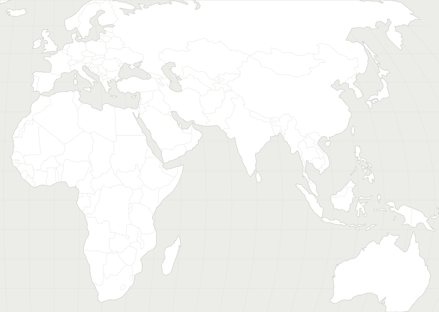

11月20日防务要闻地图

01 · 基辅（示意） · 俄乌 / 欧洲卫星图显示刻赤铁路桥受损，普京扬言更痛苦报复The War Zone；RTÉ；The Guardian · 一档读全文 →
02 · 乌克兰（示意） · 俄乌 / 欧洲乌计划明年无人机再翻倍，英国将提供1000余架远程机Defense News；乌克兰国防部 Defence of Ukraine；国际原子能机构 IAEA · 二档读全文 →
03 · 法国（示意） · 俄乌 / 欧洲法国与瑞典首次举行联合核威慑演习Defense News · 一档读全文 →
04 · 丹麦（示意） · 俄乌 / 欧洲丹麦议会一致批准美丹格陵兰安全协议Defense News · 一档读全文 →
05 · 台湾周边（示意） · 印太 / 台海台公布20日8架次共机、7艘共舰，6架次越线青年日报 Youth Daily News；台湾国防部 PLA 活动列表 · 一档读全文 →
06 · 日本（示意） · 印太 / 台海俄图-95经与那国与台湾之间北上，日公布TB-001航迹日本统合幕僚监部 Japan Joint Staff；日本统合幕僚监部 Japan Joint Staff；青年日报 Youth Daily News · 一档读全文 →
07 · 乌克兰（示意） · 中东 / 导弹 / 核美中俄深圳宣言承诺核风险对话，未提乌伊战事白宫 The White House；The Guardian；Hans Kristensen · 一档读全文 →
08 · 伊朗（示意） · 中东 / 导弹 / 核特朗普称对伊朗下一步要等到明年再决定Axios · 三档读全文 →
09 · 伊朗（示意） · 中东 / 导弹 / 核伊斯法罕以北发现仍在开挖的新地下设施Arms Control Wonk · 二档读全文 →
未定位： · · · ·
一档二档三档